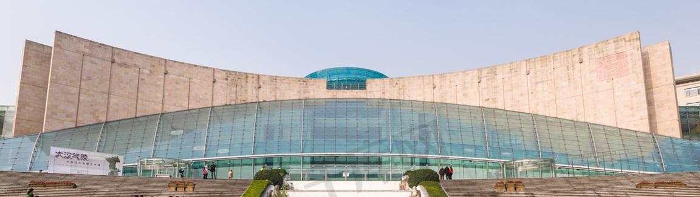

三峡博物馆：重庆的「山水历史活地图」
坐落在两江交汇处的三峡博物馆，外形酷似一艘扬帆起航的巨轮。走进馆内，仿佛踏上了一段奇妙的旅程。这里的展品丰富多样，从史前时代的陶俑，到抗战时期的文物，应有尽有。就像一部重庆版“国家宝藏”，让你目不暇接。
别看博物馆庄重肃穆，其实里面藏着不少接地气的宝贝。比如那件古代的“火锅”，让你见识一下重庆人吃火锅的历史有多悠久。还有那些精美的瓷器、刺绣，展现了巴蜀人民的高超技艺。逛完一圈，你会发现重庆不仅美食诱人，文化底蕴也相当深厚。
博物馆的镇馆之宝——乌杨汉阙，堪称国宝级文物。它就像一座穿越时空的桥梁，让你一睹汉代风采。此外，还有三峡地区的考古遗址复原，让你身临其境地感受古人生活的场景。
逛累了，博物馆还有个休闲好去处——长江流域生态园。这里绿树成荫，小桥流水，让你在感受历史沧桑的同时，也能享受片刻的宁静。
小贴士：参观三峡博物馆，最好提前预约，避免排队等候。周二至周日免费开放，周一闭馆。馆内设有免费讲解服务，记得领取语音导览器，让你更好地了解展品背后的故事。逛完博物馆，不妨去附近的解放碑、洪崖洞走走，感受重庆的山水魅力和市井气息。别忘了，重庆的美景美食都在等着你哦！